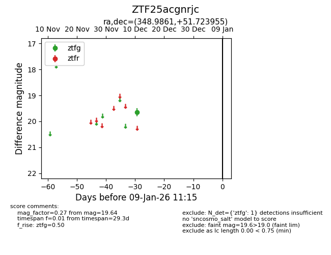
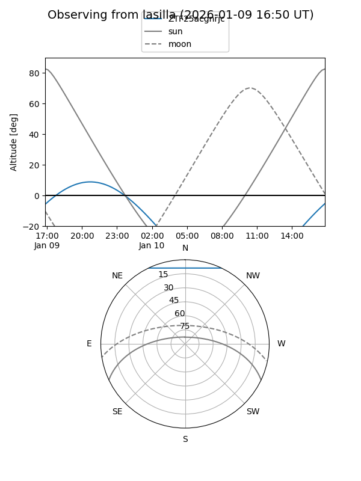
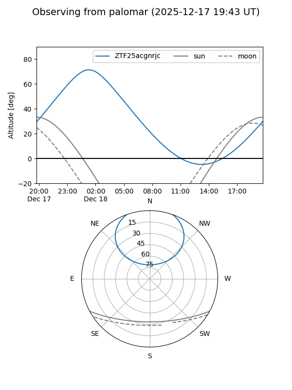

ZTF25acgnrjc
Target ZTF25acgnrjc at 2025-12-18 11:17
Aliases and brokers:
FINK: fink-portal.org/ZTF25acgnrjc
Lasair: lasair-ztf.lsst.ac.uk/objects/ZTF25acgnrjc
ALeRCE: alerce.online/object/ZTF25acgnrjc
alt names
ZTF25acgnrjc (ztf,fink_ztf)
Coordinates:
equatorial (ra, dec) = 348.9861,+51.72396
equatorial (HMS+DMS) = 23:15:56.67,+51:43:26.24
galactic (l, b) = (108.2517,-8.40516)
Photometry
last ztfg=19.64
1 ztfg detections
Lightcurve

Visibility


Additional plots